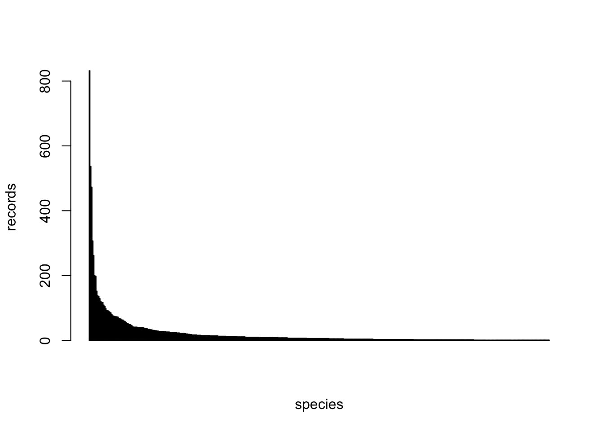
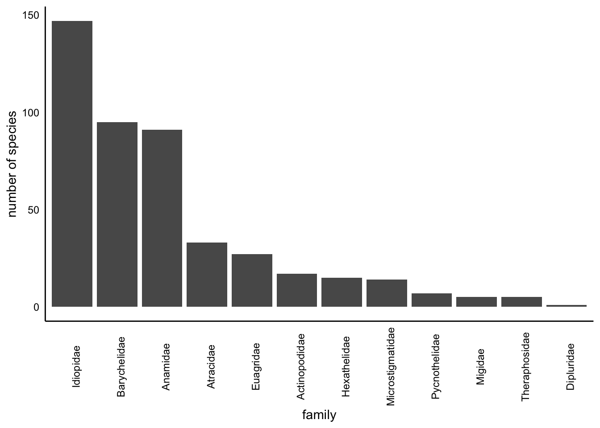
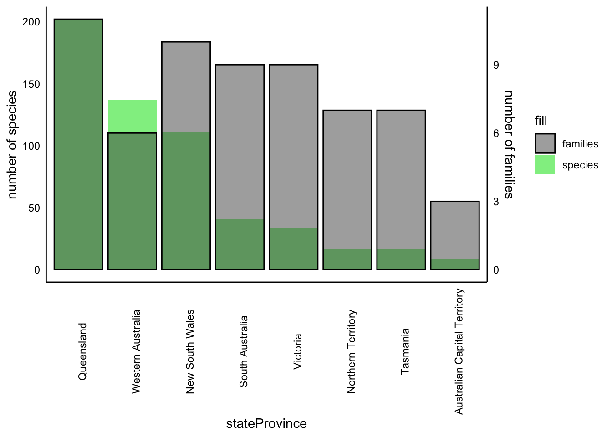
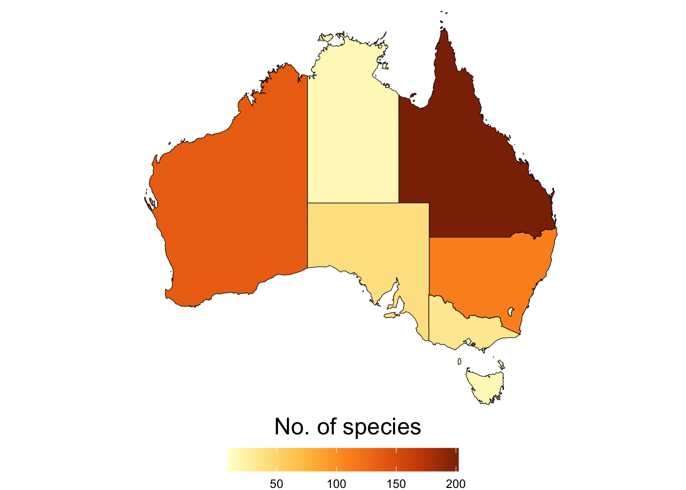
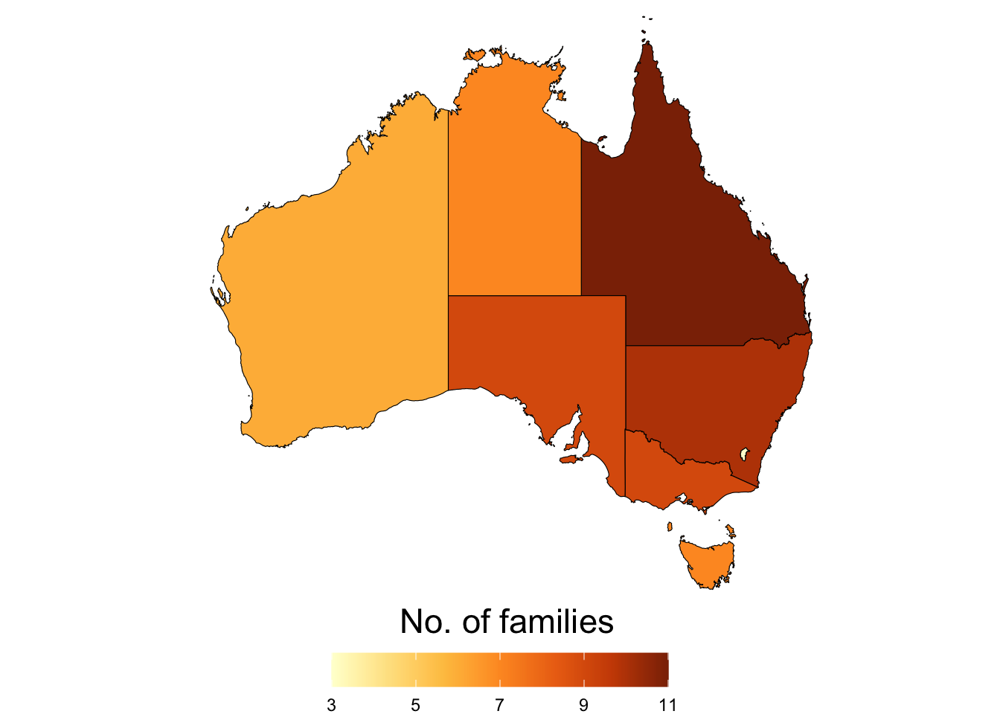

2 Methods
2.1 Data retrieval
Note
We downloaded data for this report on the 2024-03-13 and the raw download contained 9395 records
Source code
The data retrieval workflow can be found here
We used data from Atlas of Living Australia (ALA) for this study. We downloaded occurrence records using the galah R package using the following criterion:
- Found in Australian mainland and Tasmania.
- Identified to a taxon rank of species.
- Basis of record of either:
- Preserved specimen
- Material sample
- Machine observation
- Human observation
- Coordinate uncertainty of less than 1000 meters or has a value of NA (citizen science records or human observations are typically entered as NA)
We also used ALA’s data quality assertions to further refine our download. We excluded occurrence records using the following criterion:
- Coordinates are equal to 0
- Coordinates are presumed swapped e.g. when latitude is entered as longitude
- Latitude and longitude values are presumed negated
- Coordinates our out of range
- Taxon excluded by the ALA
- Taxon considered as a questionable species
See Section 2.2.5 to learn more about which assertions we used for this project.
2.2 Data overview
Note
The full data overview report can be found here
Source code
The data overview workflow can be found here
After the initial data retrieval the data were summarised to provide an overview of the number of records, species, and families represented, as well as the broad distribution of these across Australian states. The basis of records and data quality assertions were also investigated. This provided a broad overview of data quality and facilitated review by taxonomic experts.
2.2.1 Species
There are 457 species in total in the original download.
The below barplot shows the distribution of the number of records across species.
The below table shows the number of records of each species.
2.2.2 Family
Barplot showing the number of species in each family:

2.2.3 Taxonomic overview by state
| species | n |
|---|---|
| Australian Capital Territory | |
| Missulena occatoria | 69 |
| Atrax yorkmainorum | 22 |
| Paraembolides brindabella | 11 |
| New South Wales | |
| Atrax robustus | 258 |
| Missulena bradleyi | 164 |
| Missulena occatoria | 97 |
| Northern Territory | |
| Missulena pruinosa | 33 |
| Selenocosmia stirlingi | 31 |
| Aname humptydoo | 11 |
| Queensland | |
| Missulena occatoria | 330 |
| Missulena bradleyi | 292 |
| Seqocrypta jakara | 266 |
| South Australia | |
| Blakistonia aurea | 199 |
| Missulena occatoria | 156 |
| Idiosoma subtriste | 151 |
| Tasmania | |
| Hadronyche venenata | 72 |
| Teranodes montana | 63 |
| Chenistonia trevallynia | 47 |
| Victoria | |
| Missulena occatoria | 155 |
| Hadronyche modesta | 137 |
| Hadronyche meridiana | 85 |
| Western Australia | |
| Aname mellosa | 473 |
| Bungulla bertmaini | 121 |
| Aname lorica | 117 |



2.2.4 Basis of record
Total counts of basis of record types.
| basisOfRecord | n | percent |
|---|---|---|
| PRESERVED_SPECIMEN | 7828 | 83.32 |
| HUMAN_OBSERVATION | 1514 | 16.11 |
| MATERIAL_SAMPLE | 52 | 0.55 |
| MACHINE_OBSERVATION | 1 | 0.01 |
PRESERVED_SPECIMEN: An occurrence record describing a preserved specimen.
HUMAN_OBSERVATION: An occurrence record describing an observation made by one or more people.
MATERIAL_SAMPLE: An occurrence record based on samples taken from other specimens or the environment.
MACHINE_OBSERVATION: An occurrence record describing an observation made by a machine.
2.2.5 Assertions
Various tests are run on occurrence data in the Atlas of Living Australia, resulting in assertions about the content and quality of the data. These assertions help users gauge whether data is fit for their purposes and allow for easy data filtering. Assertions are logical variables (TRUE/FALSE) and take the value TRUE when they apply to the associated occurrence record. Descriptions of Assertions can be found at here
Here, we have focused on spatial and taxonomic assertions because accurate identification of taxa and their spatial distributions is imperative to the calculation of endemism metrics and subsequent mapping.
2.2.5.1 Spatial assertions
We investigated a range of spatial assertions and deemed the following safe to bypass when refining the data download:
COORDINATE_UNCERTAINTY_METERS_INVALID
We performed visual checks and flagged records did not seem to be out of species’ range. They were mostly cases wherecoordinateUncertaintyinMeterswas NA. We know iNaturalist records input NA forcoordinateUncertaintyinMeters, therefore in refining the data download we will include records wherecoordinateUncertaintyinMetersis NA or less than 1000 m. We will remove flagged values for a sensitivity analysis later on.COORDINATE_ROUNDED
The original coordinates were rounded to six decimals (~ 1 m precision) to simplify processing. The level of precision lost will not affect the endemism analysis.
The following will be used to refine the data download as they indicate coordinates outside of the given country (records flagged as TRUE will be excluded):
COORDINATE_OUT_OF_RANGEPRESUMED_NEGATED_LONGITUDEPRESUMED_NEGATED_LATITUDEPRESUMED_SWAPPED_COORDINATEZERO_COORDINATE
2.2.5.2 Taxonomic assertions
The following assertions were used to identify taxonomic discrepancies in the data and allow for review by taxonomic experts:
TAXON_MATCH_FUZZY - is flagged when the supplied scientific name (raw_scientificName) does not exactly match the taxonomic backbone of the Atlas.
2.3 Data cleaning
Note
The full data cleaning report can be found here
Source code
The data overview workflow can be found here
The following criterion were used to identify and remove records for the endemism analyses:
- Taxonomic errors, invalid species names or synonyms
- Species introduced to Australia
- Marine taxa
- Records with geographic errors
- Any subspecies level identifications were reclassified to species level
- Duplicates
2.3.1 Taxonomic Errors
2.3.1.1 Invalid names
The (AFD) is an online catalogue of taxonomic and biological information on all animal species known to occur within Australia and its territories.
The Australian Faunal Directory (AFD) was used to cross validate the records from ALA to ensure all records had valid species names.
A list of valid species names was downloaded from the AFD and was compared to the species names in our dataset, subsetting any records that did not have a matching valid name.
The AFD lists any applicable synonyms for each species within their database. The 4 unmatched species might be synonyms of valid species.
The potential synonym matches are as follows:
| ALA_names | AFD_synonyms |
|---|---|
| Eucyrtops eremaeus | Eucyrtops eremaea |
| Kwonkan turriger | NA |
| Proshermacha wilga | NA |
| Selenocosmia crassipes | NA |
These will be verified by experts to determine how to best handle them. For now,taxa in our dataset that are not matched in the AFD will be excluded.
Important
As such, we decide to exclude these 4 taxa from our dataset (15 observations, 0.002% of raw dataset).
Note
After removing the taxonomic errors, we have 9380 observations after the exclusion, 453 species.
2.3.2 Introduced Species
Any species which are not native to Australia were removed from our dataset. To identify all introduced species in the dataset, we used species lists from the World Spider Catalogue (WSC) and the Global Register of Invasive and Introduced Species (GRIIS).
The (WSC) is a comprehensive online database of spiders from around the world, with detailed taxonomic information, distribution maps, references and images.
Important
Introduced species in the WSC matched with 0 records in our data.
(GRIIS) is a project by the IUCN SSC Invasive Species Specialist Group to compile annotated and verified country-wise inventories of introduced and invasive species.
Important
There are no arachnids in the Australian GRIIS list
Note
For the purpose of this project, we conclude there are no introduced spiders in our dataset.
2.3.3 Marine Species
The World Register of Marine Species (WoRMS) was used to identify and remove marine species from the data. WoRMS provides a authoritative and comprehensive list of names of marine organisms, including currently valid and alternative names.
Using the worrms R package, we supplied our list of 453 species to the wm_records_taxamatch() function to check whether any our taxa are classified as marine.
Note
In the case of this project, we found 0 taxa that matched with marine species in the WoRMS database.
2.3.4 Geographic Errors
Biodiversity data, especially citizen science data can have various geographic imperfections. For example, occurrence records may include data from institutions such as botanic gardens or zoos which may not be reflective of a specie’s natural range. There may be data entry errors where the default location of a taxa is assumed to be the center of particular region. For these reasons, we used the R package CoordinateCleaner to investigate potential errors in our dataset.
We used the clean_coordinates() function and tested whether any of our coordinates were the following:
- General coordinate validity
- Country and province centroids
- Capital coordinates
- Coordinates of biodiversity institutions
- Spatial outliers
- Temporal outliers
- Assigned to the location of the GBIF headquarters
- Located in Urban areas
- Located in the sea
- Duplicated values
- Plain zeros
Table of the number of observations flagged by CoordinateCleaner’s testing suite:
| Test | Number of Observations |
|---|---|
| .val | 0 |
| .equ | 0 |
| .zer | 0 |
| .cap | 48 |
| .cen | 0 |
| .sea | 418 |
| .urb | 1292 |
| .otl | 119 |
| .gbf | 0 |
| .inst | 26 |
| .dpl | 2970 |
| .summary | 4125 |
CoordinateCleaner, identified a large number of duplicates which we have a separate workflow in Section 2.3.5 so we decided to ignore the duplicates flagged by CoordinateCleaner.
After some consideration:
- 48 records excluded due to being near a capital vicinity (0.51%)
- 26 records excluded due to being in the vicinity of biodiversity institutions (0.28%).
- 418 records excluded due to being in sea (4.45%).
We will consult the taxonomic experts regarding records flagged as being in the sea and found in urban areas. At this stage, given the number records are precious, we decide to include these records for the analyses
Note
After removing these geographic errors, we have 8888 observations after the exclusion, 437 species.
2.3.5 Duplicate Records
Duplicate records can affect statistical analyses by pseudoreplication (increasing sample size but not adding information). We noticed that some records that had the same coordinate values for a large number of different species. These records were typically from museum record providers, we suspect this was due to the sampling method e.g. pitfall traps. For this reason, we decided to remove records if they fulfiled the following critiera:
- the record was duplicated at the species level
- had same exact coordinates
- had same time and date of collection
Important
Using this method, we excluded 2513 from the dataset (26.75%).
Note
After deduplication, we have 6375 observations after the exclusion, 404 species.
2.3.6 Minimum number of observations
The final step in our data cleaning workflow is to exclude any species that have fewer than three observations as this is a key requirement for the generation of alpha hulls.
Important
We identified 185 species with fewer than three observations. This resulted in an exclusion of 324 observations (3.45%).
Note
After removing data-deficient taxa, we have 6051 observations after the exclusion, 219 species.
2.3.7 Citizen science data
While citizen science is an increasingly important source of data that informs research, it’s accuracy and quality impact statistical inference. This is likely due to improper species identification.
As such, we decided to execute the endemism analysis using the cleaned data that includes citizen science data (e.g. basis of record = "HUMAN_OBSERVATION"), as well as a dataset with we exclude citizen science data.
Important
There were 1388 records that were flagged with basis of record = "HUMAN_OBSERVATION". This resulted in an exclusion of 14.77% of the original data).
Note
After removing data-deficient taxa, we have 4663 observations after the exclusion, 213 species.
2.4 Generation of \(\alpha\) hulls
Source code
The alpha-hull workflow can be found here
Spatial data for invertebrates are typically sparse, often resulting in exclusion of entire species when using advanced spatial modelling methods such as species distribution models.
One way to retain as many species as possible in a spatial analysis is to represent species range with alpha-hulls, a form of spatial polygon. An alpha-hull can be computed using a minimum of three data points, which allows the inclusion of data-deficient invertebrates in our endemism analysis
Using the cleaned data, we applied the EOO.computing() function from R package ConR to quantify alpha-hulls for all species that had at least 3 records (n = ). We used an alpha value of 2 and a buffer size of 0.000001 (which approximates to ~100m). The alpha-hull workflow is laid out in this document.
Alpha-hulls were converted into SpatialPolgyon objects using the sp R package and exported for endemism analysis
2.5 Biodiversity metrics
Source code
The biodiversity metrics workflow can be found here
In order to quantify patterns of species richness and endemism, we need to convert our point based (i.e. coordinates for each occurrence of a species) into a community matrix, whereby each row in the matrix corresponds to a different site, while each column represents a different species. The entries in the matrix indicate whether a species is present at a particular site (often with a 1 for presence and 0 for absence) or how abundant the species is at that site. See here for further information.
We converted our alpha-hulls into a community matrix using the poly2comm() function in the phyloregion R package. The resolution or grid size is set at 0.5 decimal degrees. The poly2comm() also computes abundance (the number of individuals in each cell) and species rich (number of species in each cell).
2.5.1 Quantifying endemism
Endemism is a measure of rarity relative to other species (refs). There are multiple metrics to assess which areas are of importance for Mygal spiders, each have their own caveats. In order to get a fuller picture of the distribution of species and importantly, rare species that are limited in their range, we need to use a combination of endemism metrics.
2.5.1.1 Weighted endemism
Weighted endemism is species richness inversely weighted by species ranges(Crisp et al. 2001),(Laffan and Crisp 2003),(Barnabas H. Daru et al. 2020). It gives higher weight to species with smaller ranges, emphasizing areas with many range-restricted species. WE highlights areas with a high concentration of rare species, which can be crucial for conservation efforts, however regions with high species richness can have inflated WE values simply because they have more species, not necessarily more endemics (https://www.jstor.org/stable/3554498).
We calculated WE using the weighted_endemism() from phyloregion package.
2.5.1.2 Corrected weighted endemism
Corrected weighted endemism accounts for species richness in each cell. This correction accounts for the fact that areas with more species are likely to have more endemics by chance alone (Crisp and Laffan). It provides a balanced measure, considering rarity and richness and range sizes.
We calculated CWE by dividing the WE in each grid cell by species richness.
2.5.2 Statistical inference
We calculated the Moran’s I test statistic, to determine whether spatial patterns of species richness, abundance and endemism for Mygalomorphs are distributed in a way that is not expected by random chance. Moran’s I is a statistical measure used to assess spatial autocorrelation, which is the degree to which a set of spatial features e.g occurrences or polygons are clustered, dispersed, or randomly distributed across a geographic area (ref).
Moran’s I ranges from -1 to 1:
- 1: Perfect positive spatial autocorrelation (values are highly clustered).
- 0: No spatial autocorrelation (random distribution).
- -1: Perfect negative spatial autocorrelation (values are perfectly dispersed).
2.6 Data and code availability
All data and code to reproduce the R portion of our analyses can be found at our Github repository.